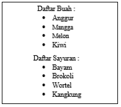

A. Pengertian List
List adalah bagian teks di dalam dokumen yang berisi daftar item dari suatu kelompok atau grup tertentu.
Sebagai contoh, dalam situs web yang bertema kuliner, list dapat berupa daftar dari makanan dan minuman, beserta
harganya. List dapat juga berupa prosedur (urutan langkah-langkah) dari suatu pekerjaan tertentu, yang sifatnya
harus dilakukan secara berurutan dari langkah pertama sampai langkah terakhir. Contoh penggunaan list sebagai
berikut :

List HTML
CSS dapat digunakan untuk memformat border atau garis tepi dari sebuah tabel.
Format yang dapat dilakukan meliputi jenis garis, warna border, ketebalan garis tepi, warna dan sebagainya

Hasilnya

Pengaturan Lebar dan Tinggi Tabel
Lebar dan tinggi dari sebuah tabel didefinisikan dalam property width dan height.
Contoh berikut ini mengatur lebar tabel 50% dan tinggi dari elemen th adalah 20p

Hasilnya

Pengaturan Text-Align Tabel
Teks dalam tabel diatur dengan properti.text-align dan vertical-align. Nilai dari properti text-align untuk
horizontal alignment adalah left, right, atau center

Hasilnya

Pengaturan Padding Tabel
Padding adalah jarak antara isi atau content, berupa teks ataupun gambar dengan batas dalam dari sel tersebut.
Style padding ini dapat diterapkan pada elemen HTML (kolom). Ukuran yang digunakan dapat berupa cm, atau px
(piksel).

Hasilnya

Pengaturan Warna Table
Pewarnaan pada tabel dapat digunakan untuk mengatur warna pada teks,background maupun border

Hasilnya